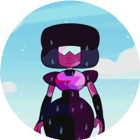

Quando tudo parecia perdido, o pequeno Steven aparece. Se depara com a situação, e corre para ajudar as gemas Rubi e Safira. Enquanto corre, começa a gritar algumas palavras que de longe não fazem sentido, mas conforme ele se aproxima, as amantes começam a entender. Steven vem dizendo "Flexibilidade, Amor e Confiança". Lema de Garnet para manter esse relacionamento a milhares de anos. Logo, Rubi e Safira:

A-Gritam para Steven atacar diretamente a Diamante
B-Ignoram Steven e se preparam para o fim certo
C-Usam das palavras de Steven para reacender a chama dos sentimentos